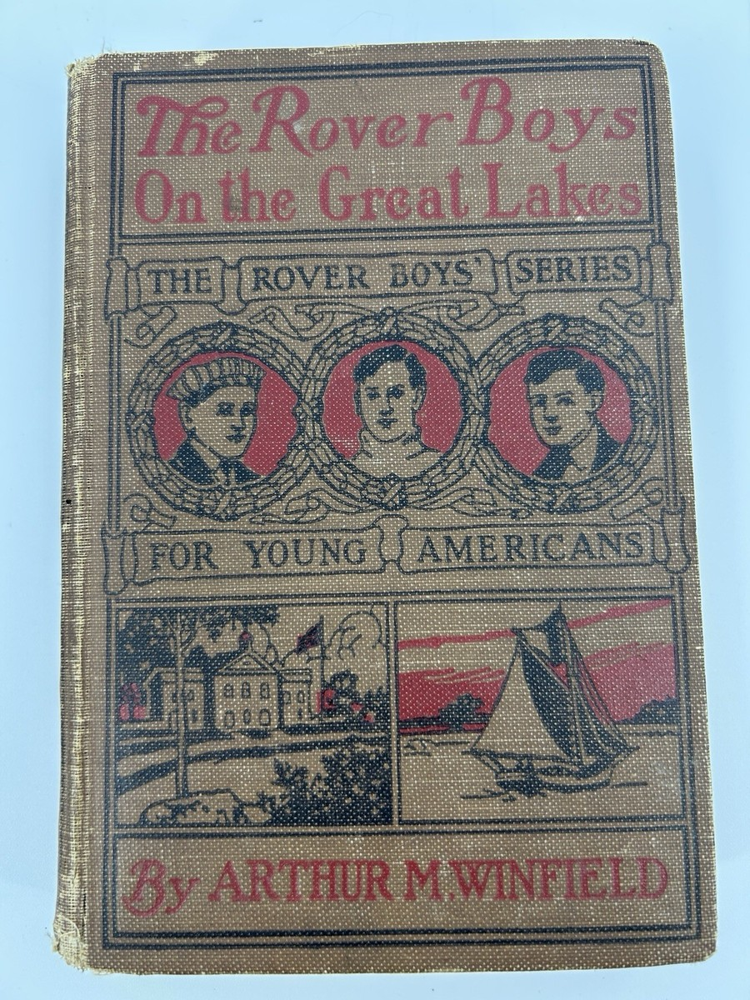

Bacaan
Terpilih
🌙 / ☀️

← Perpustakaan
Para Anak Laki-Laki Pengembara di Danau-Danau Besar
Arthur M. Winfield
1901
Daftar Isi
Tentang Apa Buku Ini
Perkenalan.
Bab I. Badai Di Danau Erie.
Bab Ii. Hilangnya Dick.
Bab Iii. Di Atas Rakit Kayu.
Bab Iv. Di Tangan Musuh.
Bab V. Pelayaran Kapal &Quot;Merak.&Quot;
Bab Vi. Mencari Dick.
Bab Vii. Pelarian Arnold Baxter.
Bab Viii. Di Danau Lagi.
Bab Ix. Terjebak Dalam Perangkap.
Bab X. Pelarian Dari Ruang Peluru.
Bab Xi. Mendapatkan Satu Poin.
Bab Xii. Makan Malam Yang Penting.
Bab Xiii. Tiga Tawanan.
Bab Xiv. Dick Berhasil Melarikan Diri.
Bab Xv. Apa Yang Diketahui Pria Lumpuh Itu.
Bab Xvi. Berangkat Menuju Pulau Needle Point.
Bab Xvii. Sebuah Gua Dan Seekor Ular.
Bab Xviii. Kopi Untuk Tiga Orang.
Bab Xix. Penemuan Yang Mengagumkan.
Bab Xx. Permainan Josiah Crabtree.
Bab Xxi. Tom Membuat Salah Satu Musuhnya Bersatu.
Bab Xxii. Rahasia Gua Pulau.
Bab Xxiii. Keluarga Baxter Sedang Diikuti.
Bab Xxiv. Pertemuan Dalam Kegelapan.
Bab Xxv. Berkelahi Di Pantai Dengan Kapal &Quot;Wellington&Quot;
Bab Xxvi. Crabtree Bergabung Dengan Keluarga Baxter.
Bab Xxvii. Bagaimana Tom Ditangkap.
Bab Xxviii. Keluarga Baxter Membahasnya,
Bab Xxix. Dora Stanhope Muncul.
Bab Xxx. Pulang Kembali—Kesimpulan.